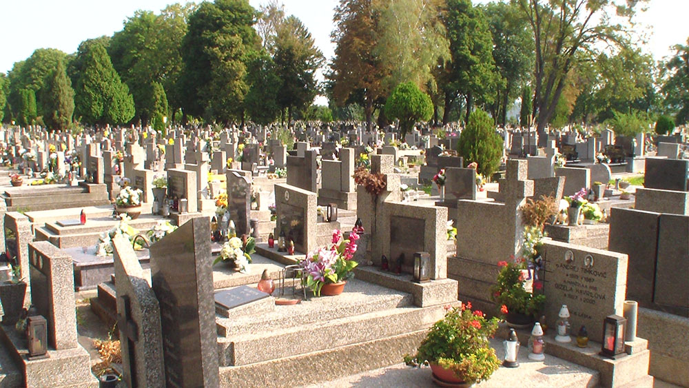

Futbalové ihrisko
TJ Busov Nižný TvarožecKrčma, potraviny a obecná sála
Obecný úrad
Nižný Tvarožec 34Cintorín
Základná škola
Základná škola Nižný Tvarožec je málotriedna škola. Budova bola postavená v roku 1976. Je v dobrom technickom stave. V posledných 3 rokoch prešla rekonštrukciou. Boli vymenené okná, budova bola zateplená, Okolo školy je krásny areál, ktorý slúži na oddych ale i športovú činnosť detí v ich voľnom čase.
Grécko-katolícký kostol
Grécko-katolícky chrám Povýšenia sv.Kríža – kostol bol postavený v roku 1777 v neskoro barokovom slohu
Krčma a potraviny